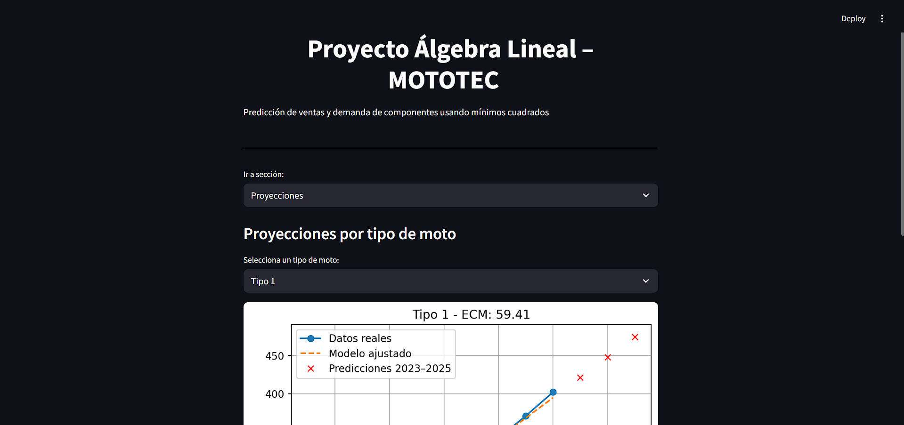
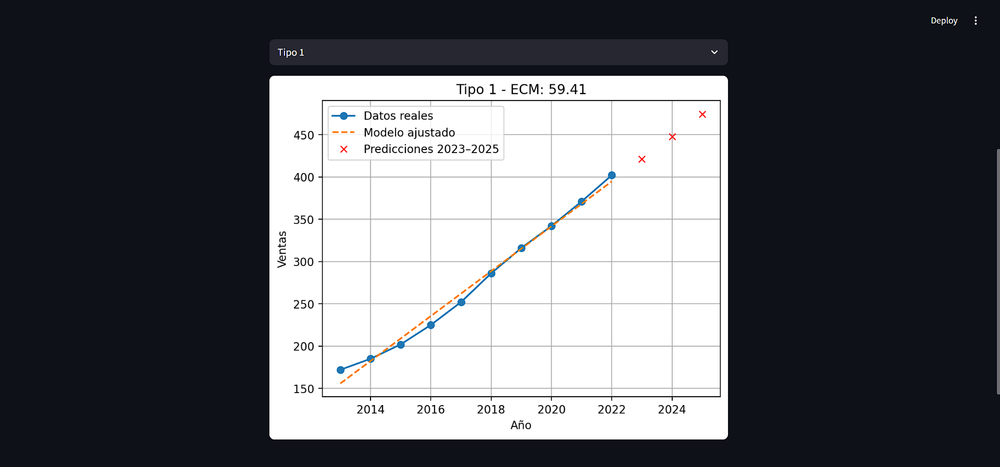
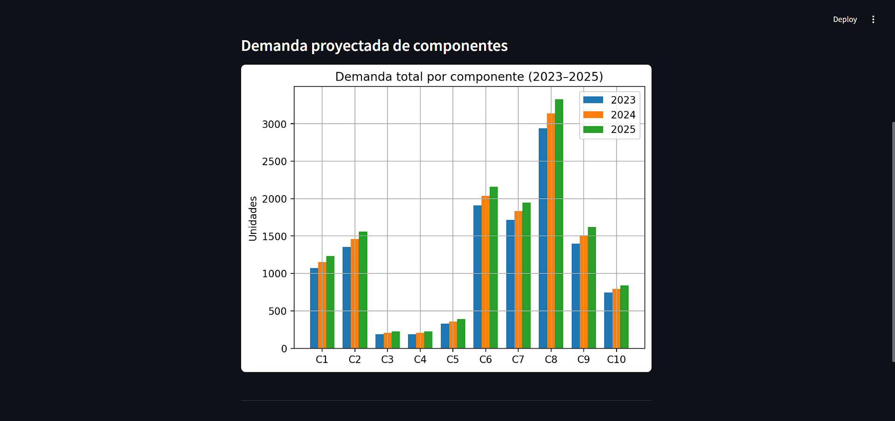

Matrices para la libertad - MOTOTEC
Este fue mi proyecto final para la materia de álgebra lineal, fue realizado en el año 2025 en su primer semestre (2025-1), el objetivo fue predecir las ventas de motocicletas y la demanda de componentes usando método de mínimos cuadrados y álgebra matricial en un contexto donde teníamos una guerra de aranceles ocurriendo en ese momento, para agregarle algo más diferente se le dio una interfaz de aplicación web que se ejecuta localmente para que sea más vistoso a la hora de revisar los resultados, además de que se le dio un enfoque liberal libertario. Este proyecto cuenta con su repositorio en GitHub además de un video explicativo donde comentamos cómo se realizó el código, y cuáles fueron los resultados de nuestros cálculos.


